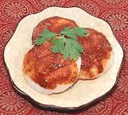

|
Podi IdliIndia, South - Podli Idli | ||||
| Makes: Effort: Sched: DoAhead: |
1 serv * 10 min Most |
Idlis at breakfast are often served with one or two Chutneys, or a Sambar, or a Rasam, but smeared with delicious Idli Podi is also very popular (and a lot easier), For details on making Idlis, see our recipe Idli - Rice Cakes. | |||
|
4 ar ar |
|
Idli (1) Idli Podi (2) Gingelly Oil (3) or Ghee |
Recipe Amounts are Per ServingMake - (10 min)
|
ibg_podidl1 201111 - www.clovegarden.com
©Andrew Grygus - agryg@aaxnet.com - Linking to and
non-commercial use of this page is permitted.